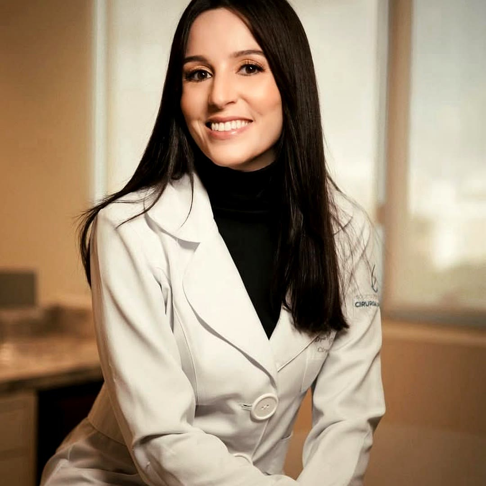

Segurança
Indicação responsável, avaliação individual e conduta técnica voltada para um processo cirúrgico seguro e bem orientado.
Cirurgia plástica · Salvador
Cada cirurgia é planejada com escuta atenta, respeito à sua anatomia e segurança em todas as etapas, do primeiro encontro ao pós-operatório.

Sobre a Dra. Giselle
Sou apaixonada por devolver autoestima às minhas pacientes. Cada cirurgia é planejada com delicadeza, escuta atenta e compromisso com aquilo que realmente faz sentido para você.
Pilares do atendimento
Indicação responsável, avaliação individual e conduta técnica voltada para um processo cirúrgico seguro e bem orientado.
Planejamento que valoriza a harmonia corporal, respeitando proporções, anatomia e a identidade de cada paciente.
Suporte no pré e no pós-operatório, com orientações claras, proximidade e atenção em todas as etapas.
Procedimentos
Para elevar e reposicionar as mamas, com técnica alinhada à necessidade e ao perfil de cada paciente.
Planejamento cuidadoso para ganho de volume e projeção, com proporção e naturalidade.
Redução do volume mamário com foco em conforto, harmonia corporal e bem-estar.
Combinação de técnicas para melhorar o contorno abdominal, a flacidez e a definição corporal.
Remodelação estratégica do contorno corporal, respeitando anatomia e objetivos da paciente.
Planejamento global para valorizar a silhueta com equilíbrio, segurança e expectativa realista.
Cada indicação cirúrgica é definida em consulta, após avaliação médica individualizada, para alinhar expectativas e orientar a conduta mais adequada ao seu caso.
Avaliações no Google
Nota média em 24 avaliações públicas no Google Maps.
O consultório é novinho e muito bonito. A recepção sempre disponível e disposta a responder todas as dúvidas, seja on-line ou presencial […] Atendimento de Dra. Giselle é excepcional, humanizado e personalizado.
A Dra. e a sua equipe são incríveis! Confiei de olhos fechados e não me arrependi nem 1%, todo o suporte antes e depois estão sendo e foram incríveis!
A doutora muito humana e com o trabalho incrível que elevou minha autoestima e confiança. Só tenho a elogiar […]
Localização e contato
Caminho das ÁrvoresAv. Antônio Carlos Magalhães, 3244 · Sala 1416
Salvador · BA · CEP 41820-000
Instagram: @dragisellegalon
Dúvidas frequentes
A consulta é o momento de avaliação médica, escuta, esclarecimento de dúvidas e definição da melhor conduta para cada caso.
Somente após avaliação individualizada é possível indicar a técnica mais adequada, considerando anatomia, objetivos e segurança.
Sim. O acompanhamento no pós-operatório é parte importante do processo e contribui para orientação, recuperação e evolução adequada.
Além das cirurgias das mamas, a Dra. Giselle também atua com contorno corporal, lipoabdominoplastia, lipoescultura e procedimentos relacionados à harmonização do corpo.
Próximo passo
Atendimento de segunda a sexta, das 9h às 18h, no Caminho das Árvores.
Agendar avaliação pelo WhatsApp